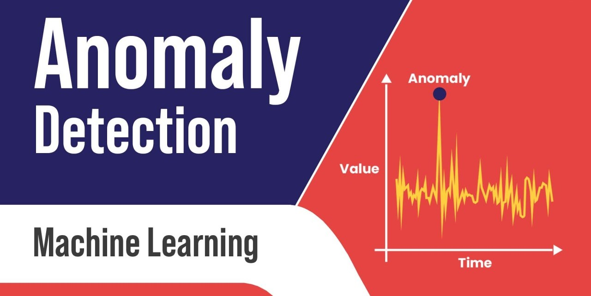

Project Description
This was the main intern project during my Software Engineering Internship at Amazon Web Services (AWS). My project addressed a key issue within the internal tool that measured a user's journey on AWS pages. The database which the tool was conducting analysis on would lose data throughout its filtering stages or even be inconsistent overall with the metric data coming in.
I was responsible for tracking these faulty metrics and developing an algorithm that would detect any meaningful anomalies. To do this, I worked with teams across the AWS User Experience organization to diagnose the problem and develop a thorough solution. My implementation involved big data processing using Spark, machine learning, and a variety of AWS services. The final deliverable was a tool that made the debugging process for the team as simple as identifying which alarm was going off on my dashboard.
Takeaways
- Problem-solving: This was my first taste of industry experience and it was a steep learning curve with many new technologies and larger-scale problems I faced. My ability to break down a problem and develop scalable solutions was put to the test and I learned how to effectively work in a fast-paced environment.